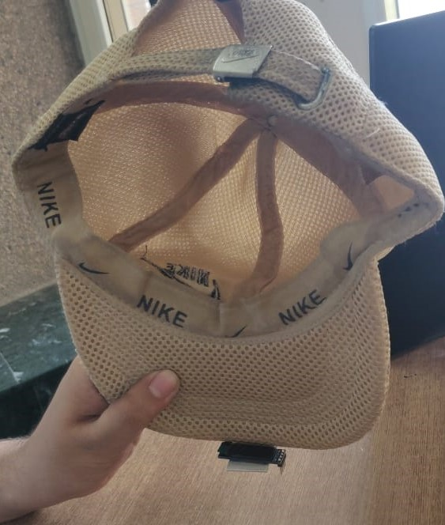

Preprint
Introducing SCOUBI, a novel method that unlocks insights from the extrasomatic space of spatial transcriptomics data.
I currently am a final year Bioinformatics PhD student at Georgia Institute of Technology, working in the Sinha Lab. My work focuses on developing computational methods for spatial transcriptomics and single-cell omics. I build tools to better understand cellular characterization, subcellular transcript localization, and cell-cell communication, among other aspects. I am broadly interested in disentangling stochastic effects from biological signals to better understand what things change and how.
Before Georgia Tech, I completed my B.Tech. in Computer Science and Biosciences at IIITD.
Introducing SCOUBI, a novel method that unlocks insights from the extrasomatic space of spatial transcriptomics data.
Our CellSP paper is now out in Communications Biology, introducing an interpretable framework for identifying transcript localization patterns in subcellular spatial transcriptomics data.
MANTIS: Analytics toolkit for spatial metabolomics with matching spatial transcriptomics data
bioRxiv · 2026
CELLWHISPER: Inference of Direct Cell-Cell Communication from Spatial Transcriptomics
bioRxiv · 2026
CellSP enables module discovery and visualization for subcellular spatial transcriptomics data
Communications Biology · 2025
Nature Communications · 2025
Intracellular spatial transcriptomic analysis toolkit (InSTAnT)
Nature Communications · 2024
Cell Reports · 2024
Hierarchical clustering of world cuisines
IEEE ICDEW · 2020
Outbreak analysis of Escherichia coli O157
Performed spatiotemporal analysis of Google search trends for various disease symptoms to forecast regional COVID-19 cases using machine learning.
Outbreak analysis of Escherichia coli O157
Created a bioinformatics web interface combining genome assembly, functional annotation, and comparative genomics to enable rapid outbreak analysis of E. coli strains.
Conditional VAE based on the RoBERTa encoder architecture to transform recipes across cuisines
Developed an open-source Python library for performing pairwise lipid force distribution analysis in molecular dynamics simulations.
Older builds that were scrappy, hands-on, and a lot of fun to make.

A heads-up navigation cap designed using Raspberry Pi to surface walking directions in the user’s field of view, combining wearable prototyping, route guidance, and interface experimentation.
A ML-based image correction browser extension for color vision deficiency, combining simulation, correction models, and an extension workflow to make on-screen content easier to distinguish.
I am a computational biologist focused on developing robust and interpretable methods for analyzing omics data, with the goal of generating meaningful biological insights. My work spans deep learning, statistical modeling, and software development for both single-cell and multi-omic datasets. My PhD research is specialized in spatial transcriptomics, with a particular emphasis on methods for analyzing single-molecule spatial data. I have experience working independently as well as collaborating within interdisciplinary teams, including internships across diverse research and applied settings.
 Python
Python R
R Ray
Ray Scikit-Learn
Scikit-Learn Hugging Face
Hugging Face W&B
W&B Git
Git JavaScript
JavaScript C/C++
C/C++ SQL
SQL Keras
Keras React
React Django
Django GCP
GCP